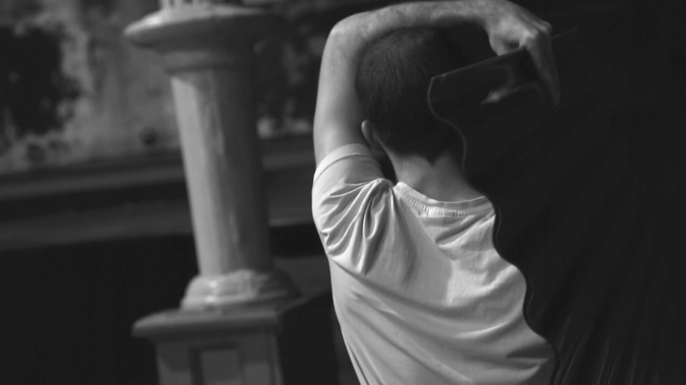
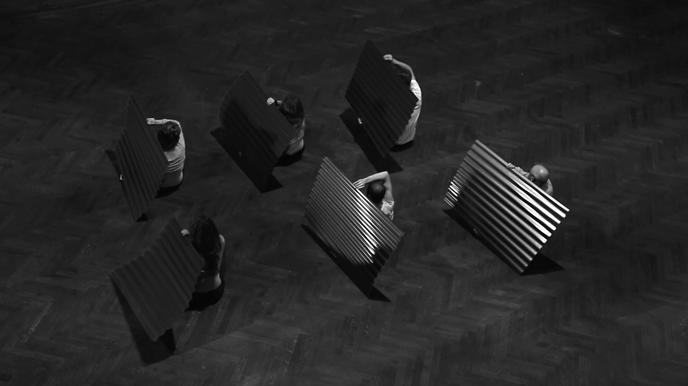
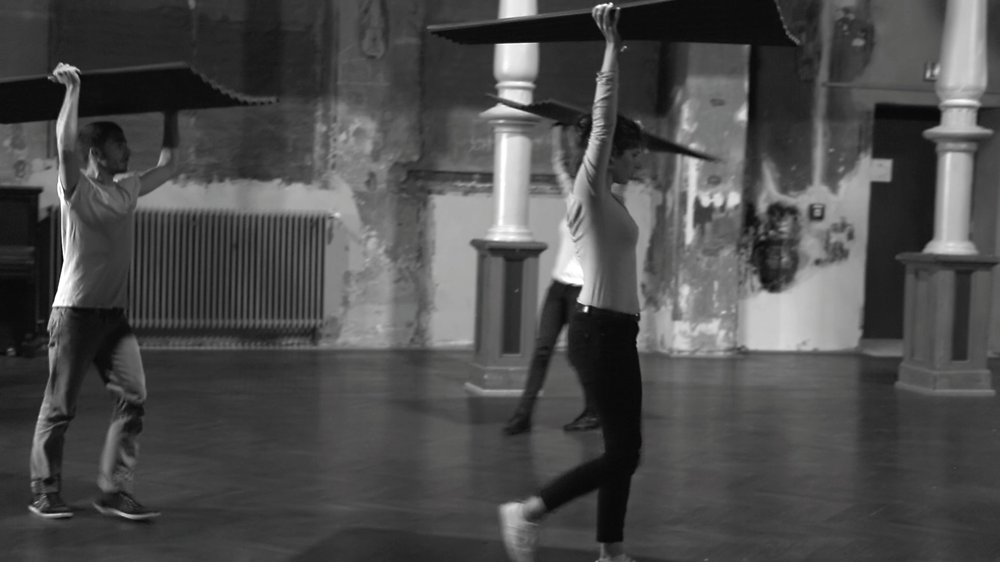

Jessica Arseneau



Code Parallel 2017-2018
multichannel digital video
A person hides behind a roofing sheet and another one covers himself as if pouring rain will fall over his head. Then, six people move together to form a new image that transforms within their gestures.
Exploring the performance between its documentation and its fiction, Code Parallel addresses modes of protections. Partly improvised and choreographed, performers make individual and collective physical movements that denotes the defensive gestures independently or in community. The space of old architecture collides with the modern object, questioning anachronism and systems of thoughts that persevere through time.